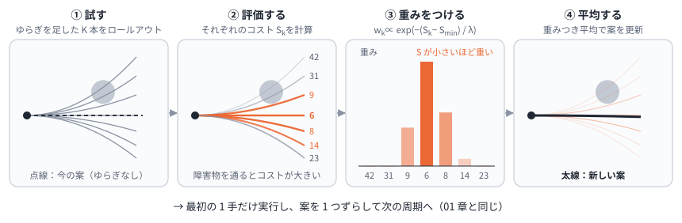
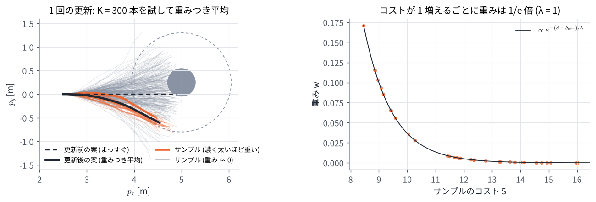
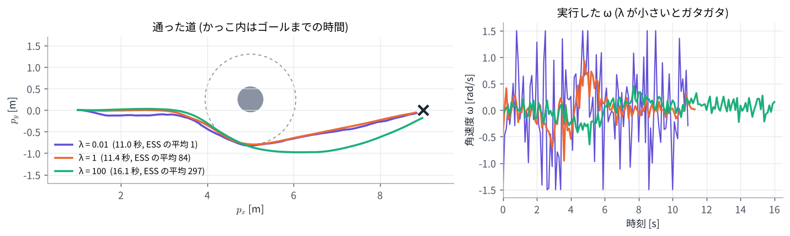

05. MPPI の考え方 (サンプリングと重み)
この章のゴール
- MPPI の 1 周期 (試す → 評価する → 重みをつける → 平均する) を説明できる
- 重み \(w_k \propto \exp(-(S_k - S_{\min}) / \lambda)\) を計算でき、\(\lambda\) の意味が分かる
- 実効サンプル数 (ESS) で、重みの偏りを測れる
- MPPI が微分を使わない (段差のコストでも使える) 理由が分かる
つながり 01 章 の最適制御問題を、微分を使わずに解きます。この章では「どう計算するか」に集中し、「なぜその式なのか」は 06 章 で扱います。
0. この章で使う記号
| 記号 | 意味 |
|---|---|
| \(U = (u_0, \dots, u_{N-1})\) | 今の案 (入力の列)。前回の答えを 1 ステップずらしたもの |
| \(K\) | サンプル数 (試す入力の列の本数) |
| \(\varepsilon_t^k \sim \mathcal N(0, \Sigma)\) | \(k\) 本目のサンプルの、時刻 \(t\) のゆらぎ (平均 0、共分散 \(\Sigma\) の正規分布) |
| \(S_k = S(U + E^k)\) | \(k\) 本目の入力の列 \(U + E^k\) でロールアウトしたときのコストの合計 (\(E^k\) はゆらぎの列) |
| \(\lambda\) | コスト差の目盛り (Nav2 のパラメータ名は temperature) |
| \(w_k\) | \(k\) 本目の重み (合計 1) |
| ESS | 実効サンプル数 \(1 / \sum_k w_k^2\) |
1. 1 周期の流れ

- 試す: 今の案 \(U\) に、ゆらぎ \(\varepsilon_t^k\) を足した入力の列を \(K\) 本作る
- 評価する: それぞれをモデルでロールアウトし、コスト \(S_k\) を計算する
- 重みをつける: コストが低いものほど重くする
- 平均する: 重みつき平均で案を更新する
- \(u_0\) を実行し、案を 1 ステップずらして次の周期へ (01 章 の receding horizon と同じ)
コードにすると次のとおりです。
# U = (前回の答えを 1 ステップずらしたもの), 形は (N, 入力の数)
eps = normal(0, Sigma, size=(K, N)) # ゆらぎを K 組
S = [cost(rollout(x_hat, U + eps[k])) # 全部試す (並列にできる)
for k in range(K)]
w = exp(-(S - S.min()) / lam) # 低コストほど重く
w = w / w.sum()
U = U + w @ eps # 重みつき平均
send(U[0]) # 最初の 1 手だけ実行
U = shift(U)
MPC と違い、微分 (ヤコビアン) も、連立方程式も、QP も出てきません。必要なのは コストを計算できること だけです。
2. 重みを手で計算する
入力が 1 つで、サンプルが 3 本の例です。ゆらぎとコストが次のとおりだったとします。
| サンプル | ゆらぎ \(\varepsilon\) | コスト \(S\) |
|---|---|---|
| 1 | +0.5 | 10 |
| 2 | 0 | 11 |
| 3 | −0.5 | 14 |
\(\lambda = 1\) なら、\(S - S_{\min} = (0, 1, 4)\) なので
更新量は \(\sum_k w_k \varepsilon^k = 0.721 \times 0.5 + 0.265 \times 0 + 0.013 \times (-0.5) = +0.354\) です。いちばん良いサンプル 1 の方向 (+0.5) へ、その 7 割ほど動きます。\(\lambda\) を変えると次のようになります (演習 5)。
| \(\lambda\) | 重み \(w\) | 更新量 | ESS |
|---|---|---|---|
| 0.3 | (0.966, 0.034, 0.000) | +0.483 | 1.07 |
| 1 | (0.721, 0.265, 0.013) | +0.354 | 1.69 |
| 10 | (0.388, 0.351, 0.260) | +0.064 | 2.92 |
2.1 \(S_{\min}\) を引く理由
重みの比は、コストの差だけで決まります。
全部のコストから同じ \(S_{\min}\) を引いても、正規化したあとの重みは変わりません。引くのは計算のためです。\(S = 1000\) のようなコストで \(e^{-1000}\) を計算すると、コンピュータでは 0 になってしまい (アンダーフロー)、全部 0 で割ることになります。\(S_{\min}\) を引けば、いちばん良いサンプルの \(e^{0} = 1\) が必ず残ります。
3. \(\lambda\) の意味: コスト差の目盛り
\(\lambda\) は、どれくらいのコスト差を「大きな差」とみなすか を決める目盛りです。
| \(\lambda\) | コストが 1 違うときの重みの比 | ふるまい |
|---|---|---|
| 0.1 | 0.00005 | 少しの差で重みが大きく変わる。いちばん良い 1 本だけを使うのに近い |
| 1 | 0.37 | 差が 1 で、重みが \(1/e\) 倍 |
| 10 | 0.90 | ほぼ同じ重み。ただの平均に近い |
- \(\lambda \to 0\): いちばん良いサンプルだけを選ぶ。そのサンプルはたまたま良かっただけかもしれないので、毎周期の答えがガタつく
- \(\lambda \to \infty\): すべての重みが等しくなり、ゆらぎの平均 (ほぼ 0) しか足されないので、案がほとんど良くならない
- ちょうどよい \(\lambda\) はコストの大きさで変わります。 コストの重みを全部 10 倍にしたら、\(\lambda\) も 10 倍にしないと同じふるまいになりません
Nav2 ではこの \(\lambda\) を temperature というパラメータ名で設定します (既定値 0.3)。物理の式と形が似ていることから付いた名前で、物理的な温度の意味はありません。この教材では「コスト差の目盛り」と呼びます。
3.1 実効サンプル数 (ESS)
重みがどれだけ偏っているかは、実効サンプル数 で測れます。
全部同じ重み (\(w_k = 1/K\)) なら \(K\)、1 本に集中すれば 1 です。「実質的に何本分のサンプルを平均しているか」の目安になります。
下のデモで、\(\lambda\) とゆらぎの大きさ \(\sigma\) を動かして、重みと ESS の変わり方を見てください。コストは \(S(u) = 2(u - 2)^2 + 8\) (最小点 \(u = 2\))、今の案は \(u = 0\) です。
4. ロボットで 1 回だけ更新してみる
演習 5 で、2 輪ロボットに MPPI を 1 回だけ使います。人の 2.5 m 手前で、まっすぐ進む案から始め、\(K = 300\)、\(\lambda = 1\) で更新します。

- 300 本のうち、人の近くを通るサンプルはコストが大きく、重みはほぼ 0 (灰色)
- 人の右下を回り込むサンプルに重みが集まる。重み 0.01 以上は 11 本で、ESS は 10.4
- 右の図のとおり、重みはコストが 1 増えるごとに \(1/e\) 倍になる
更新前の案のコストは 120.1、更新後は 7.1 になりました。面白いのは、サンプルの中でいちばん良いもの (8.5) より、平均した案 (7.1) のほうが良い ことです。良いサンプルどうしを平均すると、それぞれのランダムなでこぼこが打ち消し合うためです。
5. \(\lambda\) を変えて動かす
同じ場面 (少しずれて立つ人) を、\(\lambda\) を変えて最後まで走らせます (演習 5)。

| \(\lambda\) | ゴールまで | ESS の平均 | \(\omega\) の 1 ステップごとの変化の平均 |
|---|---|---|---|
| 0.01 | 11.0 秒 | 1.1 | 0.90 rad/s |
| 1 | 11.4 秒 | 84.5 | 0.18 rad/s |
| 100 | 16.1 秒 | 297.0 | 0.13 rad/s |
- \(\lambda = 0.01\) は毎周期「いちばん良い 1 本」に乗り換えるので、角速度がガタガタになる
- \(\lambda = 100\) はほぼ単純な平均になり、更新が進まないので、大回りしてゴールまで時間がかかる
6. ゆらぎの大きさ \(\Sigma\) とサンプル数 \(K\)
- \(\Sigma\) (ゆらぎの大きさ) は、どれだけ広く探すかを決めます
- 小さすぎると、よけ道のような大きく違う案が見つからない
- 大きすぎると、ほとんどのサンプルが悪くなって ESS が下がり、答えがガタつく
- デモでは \(\omega\) の標準偏差 0.8 rad/s、\(v\) は その 0.35 倍。Nav2 では
vx_std、wz_stdで設定する - \(K\) (サンプル数) を増やすと、重みつき平均の推定が正確になります (誤差はおよそ \(1/\sqrt{K}\) に比例。06 章)
- 計算量は \(K \times N\) 回のモデル計算に比例する。デモは \(300 \times 30 = 9{,}000\) 回、Nav2 の既定は \(1000 \times 56 = 56{,}000\) 回
- サンプルどうしは独立なので、GPU や SIMD で並列に計算できる
- 入力の上下限: サンプルを作ったあとに上下限で切り、切ったあとの値との差をゆらぎとして使います (デモと演習のコード)
7. 微分がいらない、という強み
MPPI はコストの値しか使わないので、次のようなコストでもそのまま使えます。
- 段差のあるコスト: 「接触したら +1000」。04 章 の NMPC は傾きが 0 で気づけなかったが、MPPI では接触するサンプルの重みがほぼ 0 になるので自然に避ける
- 表を引くだけのコスト: 地図 (コストマップ) の値を足し合わせるなど
- 中身の分からないモデル: シミュレータや学習したモデルでロールアウトしてもよい
一方、1 周期に \(K\) 本のロールアウトが必要なので、MPC (1 周期に数回〜十数回のコスト評価) より計算は多くなります。
8. 実装でよく加える工夫
- 補正項: 元の論文では、コストに \(\lambda \sum_t u_t^\top \Sigma^{-1} \varepsilon_t^k\) を足してから重みを計算します (06 章)。Nav2 ではこの係数を
gammaという別のパラメータにしています - 平滑化: 更新した入力の列はガタつきやすいので、なめらかにします。Nav2 は Savitzky–Golay フィルタを使います
- 反復: 1 周期に 1〜3 を数回くり返すこともできます。Nav2 の既定は 1 回です
この教材のデモと演習の MPPI は、式 (1) だけの最も簡単な形です (補正項も平滑化もなし)。
演習 5
python exercises/ex05_mppi.py
2 節の表、4 節の 1 回の更新、5 節の \(\lambda\) の比較を出力し、図を 2 枚作ります。コントローラ本体は exercises/robot2d.py の MPPI クラスです。
試してみること:
MPPI(..., sigma_w=0.8)を 0.2 や 2.0 にすると、ESS と動きはどう変わるかK=300を 30 にすると、どうなるか
理解度チェック
- コストが (5, 6, 9) の 3 本のサンプルの重みを、\(\lambda = 1\) で計算すると?
- 重みを計算するときに \(S_{\min}\) を引くのはなぜか。引くと重みは変わるか?
- \(\lambda \to 0\) と \(\lambda \to \infty\) で、MPPI はそれぞれどうふるまうか?
- コストの重みを全部 2 倍にしたとき、同じふるまいにするには \(\lambda\) をどうすればよいか?
- ESS = 1 と ESS = \(K\) は、それぞれどういう状態か?
- MPPI が「接触したら +1000」というコストでも人を避けられるのはなぜか?
- 平均した案が、どのサンプルよりも良くなることがあるのはなぜか?
答えの例
- 差は (0, 1, 4) で 2 節の例と同じなので、\(w = (0.721, 0.265, 0.013)\)。重みはコストの差だけで決まる。
- \(e^{-S}\) が小さくなりすぎて 0 になる (アンダーフロー) のを防ぐため。全部から同じ数を引くだけなので、正規化したあとの重みは変わらない。
- \(\lambda \to 0\): いちばんコストの低い 1 本だけを選ぶ (ガタつく)。\(\lambda \to \infty\): 全部が同じ重みになり、ゆらぎの平均 (ほぼ 0) を足すだけなので、案がほとんど良くならない。
- \(\lambda\) も 2 倍にする。重みは \((S_i - S_j) / \lambda\) で決まるので、コストと \(\lambda\) を同じ倍率にすれば変わらない。
- ESS = 1: 重みが 1 本に集中している。ESS = \(K\): 全部が同じ重み。
- 接触するサンプルはコストが 1000 以上大きいので、重みが \(e^{-1000/\lambda}\) 倍、つまりほぼ 0 になり、平均にほとんど入らないから。傾きを使わないので、段差でも問題にならない。
- 良いサンプルにもそれぞれランダムなでこぼこがあり、平均するとそれが打ち消し合うから。
もっと知りたい人へ
- G. Williams, P. Drews, B. Goldfain, J. M. Rehg, E. A. Theodorou, "Aggressive Driving with Model Predictive Path Integral Control," ICRA 2016. MPPI を実車 (1/5 スケールの車) で攻めた走行に使った論文。
- G. Williams et al., "Information Theoretic MPC for Model-Based Reinforcement Learning," ICRA 2017. この章の重みつき平均の形を、情報理論の考え方 (06 章) から導いた論文。